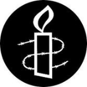

|
|
|
Browsing
Contact Us |
Campaigners |
Face to Face |
Tribune |
Interview |
News |
On the Web |
One Million |
Report
Farsi | Français | German | Italian | Spanish | العربية Also in this section
|
 Amnesty Issues Statement Calling for Release of Imprisoned Women Activists Iran: International Women’s Day Celebration Marred by Continued Detention of Dozens of WomenWednesday 9 March 2011 Amnesty International:http://www.amnesty.org/en/library/i... Amnesty International today called on the Iranian authorities to release immediately all women detained arbitrarily in Iran, including political activists, rights defenders and members of religious and ethnic minorities. Highlighting the cases of nine women prisoners of conscience submitted to the UN Commission on the Status of Women in August 2010 under its communications procedure and published today as a ten-page document, the organization deplored that despite the calls for their release or for charges against them to be dropped, Hengameh Shahidi, Shiva Nazar Ahari, Alieh Aghdam-Doust, Ronak Safazadeh, Zeynab Beyezidi, Mahboubeh Karami, Behareh Hedayat, Ma’soumeh Ka’bi, and Rozita Vaseghi are all either imprisoned or facing imminent imprisonment. Amnesty International also expressed concern that dozens of other women are currently detained arbitrarily, many as prisoners of conscience, for their peaceful political activities, or their work defending human rights. Among them are prominent political activists Zahra Rahnavard and Fatemeh Karroubi, currently held in unclear conditions which may amount to enforced disappearance along with their respective husbands, the opposition leaders Mir Hossein Mousavi and Mehdi Karroubi. Fakhrolsadat Mohtashemipour, a member of the Central Committee of the reformist opposition party, the Islamic Iran Participation Front, was arrested on 1 March 2011, apparently in reprisal for her continuing advocacy for the release of her imprisoned husband, politician Mostafa Tajzadeh, previously a Deputy Interior Minister under former President Khatami and adviser to Mir Hossein Mousavi. On the same day, journalist Mahsa Amrabadi, who is awaiting the outcome of her appeal against a one-year prison sentence for “propaganda against the system”, was also arrested. Fellow journalist Nazanin Khosravani, who has written for several reformist publications and who has been detained since 2 November 2010, is facing trial on charges of “acting against national security”. Prominent human rights lawyer Nasrin Sotoudeh, arrested on 4 September 2010, is serving an 11-year prison term imposed after conviction on the same vaguely-worded charge. Fatemeh Masjedi, a member of the One Million Signatures Campaign (also known as the Campaign for Equality), a grass roots initiative which campaigns for changes to Iranian legislation which discriminates against women, began serving a six-month sentence in Langaroud Prison, Qom in January 2011. She was convicted of “spreading propaganda against the system in favour of a feminist group (the Campaign) by distributing and collecting signatures for a petition to change laws discriminating against women, and for publication of materials in support of a feminist group opposed to the system” Many other women political prisoners and prisoners of conscience are serving long-prison terms, imposed after unfair trials. Fariba Kamalabadi and Mahvash Sabet, two women leaders of the unrecognized Baha’i minority in Iran were sentenced with five Baha’i men in August 2010 to 20 years in prison for “crimes” including "espionage for Israel", "insulting religious sanctities" and "propaganda against the system”. They were acquitted on appeal in September 2010 of some of the charges, including espionage, but are serving a reduced sentence of ten-years upheld on appeal, for charges including “acting against state security” and “propaganda against the system”. In recent weeks, they have been moved to Section 200 of Reja’i Shahr Prison (also known as Gohardasht) in Karaj, a prison notorious for its particularly harsh conditions and are reported to have received physical threats from other prisoners. Mahdieh Golrou, a student’s and women’s rights activist arrested in December 2009, is serving a two year prison term for her peaceful activities and may have to serve a previously suspended one year prison term. She is also facing new charges relating to an open letter published in November 2010 for the occasion of Student Day in Iran. Amnesty International urges the Iranian authorities to celebrate and support the activism of Iranian women who wish to see greater respect for rights in Iranian society, rather than to lock them up for years after unfair trials, often on vaguely worded charges relating to “national security”. Background The text of Amnesty International’s submission to the Commission on the Status of Women is available at http://www.amnesty.org/en/library/info/MDE13/027/2011/en The following information updates the nine cases featured in the submission. Journalist Hengameh Shahidi, who acted as an adviser to Mehdi Karroubi during his 2009 presidential campaign, remains held and is serving a six-year prison term in Evin Prison, Tehran. Human rights activist Shiva Nazar Ahari was released on bail in September 2010. Days afterwards, she was sentenced to three and a half years for “moharebeh” (enmity against God) to be served in internal exile and six months for “propaganda against the system.” These sentences were upheld on appeal in January 2011. A further sentence of two years’ imprisonment for “gathering and colluding to commit a crime” was overturned on appeal by Branch 36 of the Appeal Court. She remains at liberty awaiting a summons to begin serving her imprisonment. Women’s rights activist Alieh Aghdam-Doust continues to serve her three-year prison sentence in Evin Prison. In November 2010, she is reported to have spent a week in solitary confinement after protesting at the transfer of women political prisoners to the "methadone ward", where female drug addicts are held and where conditions are said to be poor. Kurdish and women’s rights activist Ronak Safazadeh continues to serve her six years of imprisonment in Sanandaj Prison, Kordestan Province. She passed a university entrance exam in 2010 and is trying to continue her education inside prison. Kurdish and women’s rights activist Zeynab Beyezidi continues to serve her four-year prison term in internal exile in Zanjan Prison, Zanjan Province. Women’s rights activist Mahboubeh Karami was released on bail on equivalent to US$500,000 on 18 August 2010. She was sentenced to four years’ imprisonment by Branch 26 of the Revolutionary Court after being convicted of “membership of an illegal organization (the Human Rights Association of Iran)” “ gathering and colluding with intent to harm state security and for spreading propaganda against the system”. She was acquitted of the charge of "spreading lies". Her sentence was reduced to three years on appeal in February 2011. She remains at liberty, waiting to begin serving her sentence. Student and women’s rights activist Behareh Hedayat continues to serve her nine and a half year sentence in Evin Prison. On 27 December 2010, she appeared before Branch 4 of Evin Prison’s Court alongside fellow student leader Majid Tavakkoli to face additional charges of “propaganda against the system” and "acting against national security by conspiring against the system". The new charges relate to letters critical of the authorities attributed to the two students, published in advance of Iran’s Student Day (7 December 2010). Following publication of the letter, Bahareh Hedayat was transferred to the “methadone ward” of Evin Prison, where she was interrogated while being denied contact with her family. She undertook a week long hunger strike in protest. She was allowed a family visit on 5 January 2011. She has developed a gall stone while in prison, but is not known to have received adequate treatment for this condition. On 2 February 2011, she appeared before Branch 28 of the Revolutionary Court in Tehran with Majid Tavakkoli and Mahdieh Golrou, in relation to the Student Day letters the three had written, but all three refused to participate in the proceedings on the grounds that their lawyers were not present. In late February 2011, Behareh Hedayat and Mahdieh Golrou were both reported to have been banned from family visits for at least seven weeks. Ma’soumeh Ka’bi, a member of Iran’s Ahwazi Arab minority, is continuing to serve her four and a half year prison sentence in Ahvaz, Khuzestan Prison. Her family is reported not to have been allowed to visit her for about two months. Rozita Vaseghi, serving her five-year prison sentence, is now believed to be held with other Baha’i prisoners in Vakilabad Prison, Mashhad, after spending six months in solitary confinement. In October 2010, she was reported to be facing fresh charges of “spreading Baha’i teachings” and “insulting the Islamic sancitities”. She is said to be in poor health, having lost a lot of weight and suffering from low blood pressure. Public Document For more information please call Amnesty International’s press office in London, UK, on +44 20 7413 5566 or email: press@amnesty.org International Secretariat, Amnesty International, 1 Easton St., London WC1X 0DW, UK www.amnesty.org |